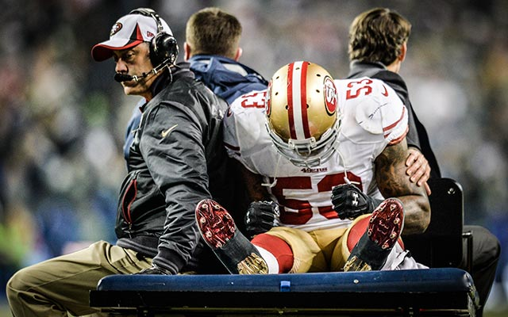

After Alex left San Francisco, the monument of Candlestick Park was torn down to build condos and to gentrify the city of San Francisco. The removal of Candlestick was symbolic for the change that not only the 49ers were going through, but San Francisco as well.
Half of the team retired from 2013-2015, and the purity of Harbaugh and the 49ers' successes were overshadowed by greed and the want for more money. During that same period, I witnessed families in San Francisco driven out by millenials looking for new, high paying tech jobs, and as I watched the 49ers fall apart and become a losing team for the second half of the decade, I watched my neighborhood transform into a college town with graduate student parties every night. I watched people out screaming at 4 AM while kids were sleeping getting ready for school the next day.
Those who started their careers in San Francisco, with the exception of Joe Staley, moved on to do bigger and better things; Alex Smith moved on to become an MVP candidate and one of the most winningest quarterbacks in the NFL, only behind Brady and Wilson. Vernon Davis won a Super Bowl with Peyton Manning in 2015. Frank Gore helped every team he played on, from Indy to Miami to Buffalo. And he's still playing. Everyone I knew grewing up in San Francisco moved on to do bigger and better things; people went to Berkeley, UCLA, Cornell, Villanova, U Chicago, and of course myself at NYU. While San Francisco was a great starting point for our careers, it seemss we got out of a worsening situation.